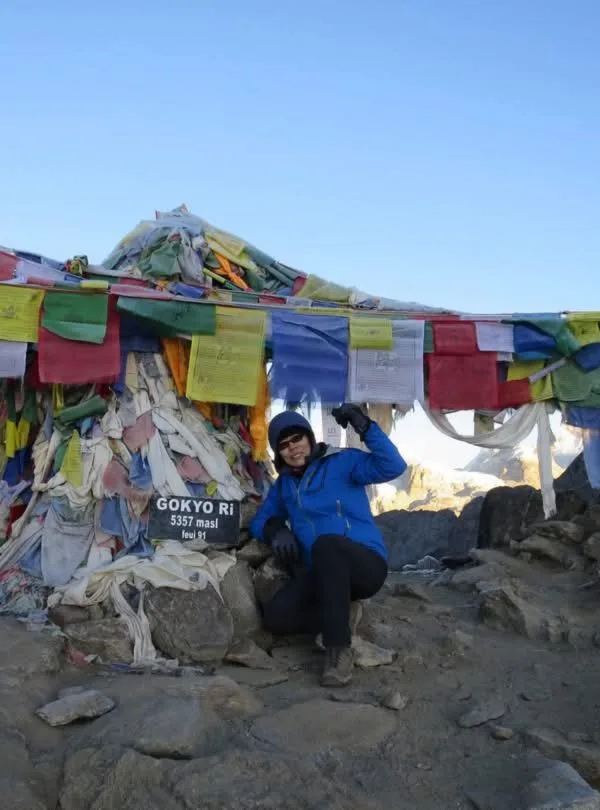
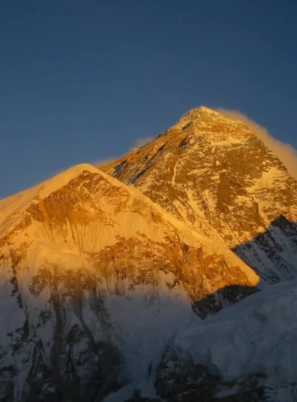
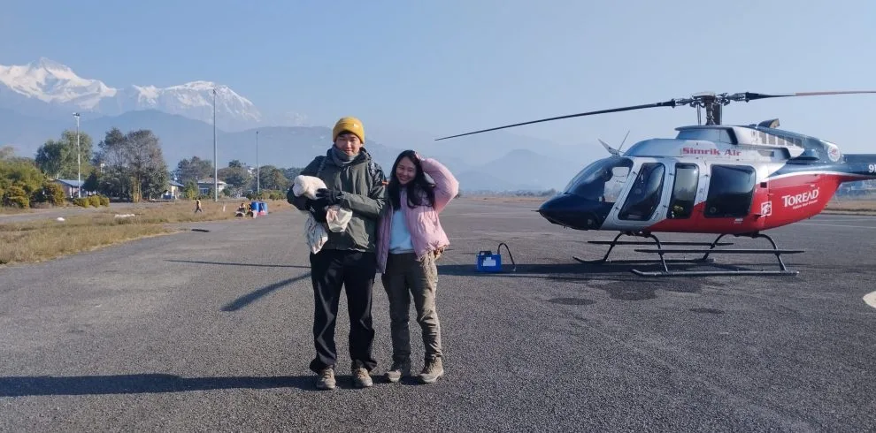

Our Gokyo Lakes & Renjo La Pass Trek (14 Days) with Igloo Himalaya Treks went beyond every expectation we had. What first pulled us towards them was their strict safety protocol and personal care. From the landing at Lukla to reaching Gokyo Lakes & Renjo La Pass (5,364m) and Kala Patthar, Sagar and the team made sure we were comfortable, safe, and hydrated every single day!
Everest Region • High Alpine Circuit
5.0
reviews on TripAdvisor
5.0
182 reviews on Google
Gokyo Lake with Renjo La Pass Trek — 14 Days
Experience the crown jewel of the Himalayas far from the commercial crowds of standard trekking trails. Our 14-day high-pass circuit leads you through the tranquil Gokyo Valley, beside six sacred turquoise glacial lakes, up the sunrise viewpoint of Gokyo Ri (5,357 m), and across the spectacular panoramic crest of Renjo La Pass (5,360 m).

Travelers' Choice
Best of the Best 2026




Key Trip Facts
Duration
14 days (Gokyo Lakes, Gokyo Ri & Renjo La)
Difficulty
Strenuous / Demanding
Maximum Altitude
5,360 m (Renjo La) / 5,357 m (Gokyo Ri)
Destination
Nepal
Activity
High-Pass Circuit & Glacial Lakes Trek
Accommodation
3-Star Kathmandu Hotel & Alpine Teahouses
Transport
Lukla Scenic Flights & Private Airport Transfers
Meals
Breakfast in KTM; Full Board (B, L, D) on Trek; Dinners
Recommended Season
Spring (Mar–May) & Autumn (Sep–Nov)
Trek Starts
Lukla (2,840 m)
Trek Ends
Lukla (2,840 m)
Trek Region
Everest / Gokyo & Bhote Koshi Valleys
Package Start Point
Kathmandu (TIA Airport)
Package End Point
Kathmandu (TIA Airport)
Gokyo Lake with Renjo La Pass Trek Overview (14 Days)
The 14-Day Gokyo Lake with Renjo La Pass Trek is widely acclaimed by wilderness purists, mountain photographers, and seasoned Himalayan hikers as the ultimate alternative to the crowded commercial Everest Base Camp highway. By turning northwest at Sanasa away from the main tourist trail, you enter the tranquil sanctuary of the Gokyo Valley, ascending beneath towering glaciated peaks along the longest glacier in the Himalayas—the 36-kilometer Ngozumpa Glacier.
Your journey culminates at the six sacred oligotrophic glacial lakes of Gokyo, highlighted by Dudh Pokhari (Third Lake, 4,790 m) and the sunrise ascent of Gokyo Ri (5,357 m) for a breathtaking 360-degree panorama of four 8,000-meter giants: Mount Everest (8,848 m), Lhotse (8,516 m), Makalu (8,485 m), and Cho Oyu (8,188 m). Instead of retracing your footsteps, you cross the exhilarating high alpine ridge of Renjo La Pass (5,360 m), descending western stone switchbacks into the remote, culturally pristine Bhote Koshi Valley and historic Sherpa settlement of Thame.
Key Route Highlights & Destinations
Renjo La Pass (5,360 m)
Gokyo Ri Summit (5,357 m)
Sacred Turquoise Gokyo Lakes
Ngozumpa Glacier (36 km)
Hotel Everest View (3,880 m)
Remote Bhote Koshi Valley
Historic Thame Monastery
Complete Circuit Loop
Four 8,000m Giants Panorama
Pristine Low-Crowd Trails
Certified High-Pass Sherpas
Trek Highlights
Crowning Cross of Renjo La Pass (5,360m / 17,585ft)
Cross the magnificent prayer-flag draped ridge crest of Renjo La for what is widely celebrated as the finest high-angle panorama of Mt. Everest, Lhotse, Makalu, and Cho Oyu over the turquoise waters of Gokyo Lake.
Six Sacred Oligotrophic Gokyo Glacial Lakes
Hike beside the pristine high-altitude sacred lakes of Gokyo—including Longponga (1st), Taboche Tsho (2nd), Dudh Pokhari (3rd), Thonak Tsho (4th), and Ngozumpa Tsho (5th)—at elevations between 4,700m and 5,000m.
Sunrise Summit of Gokyo Ri (5,357m / 17,575ft)
Ascend the iconic viewpoint of Gokyo Ri at dawn to witness a breathtaking 360° amphitheater capturing four of the planet's fourteen 8,000-meter giants simultaneously above the Ngozumpa Glacier.
Traverse Ngozumpa Glacier (Himalayas' Longest Glacier)
Experience the monumental 36-kilometer Ngozumpa Glacier, observing active ice moraines, supraglacial lakes, and dramatic glacial geology at the foot of Cho Oyu (8,188m).
Remote Bhote Koshi Valley & Ancient Tibetan Salt Route
Descend into the untouched western valley of Lungden and Marlung, following the ancient trade corridor where yak caravans traditionally transported salt and wool across Nangpa La from Tibet.
Historic Thame Village & 350-Year-Old Cliffside Gompa
Explore historic Thame, the ancestral home of Tenzing Norgay Sherpa and Apa Sherpa, and tour the sacred 17th-century Thame Dechen Chokhorling Gompa clinging dramatically to the mountainside.
✓
Wilderness-Certified Sherpa Leaders
Our high-pass leaders are government-licensed Sherpas with certified Wilderness First Aid (WFA) training and decades of Khumbu alpine experience.
✓
Expedition Gear Loan Included Free
We loan a premium 800-fill -20°C down sleeping bag, heavy expedition down jacket, and rugged 80L waterproof duffel bag at zero extra charge.
✓
Humane Porter Welfare Standards
We strictly adhere to IPPG guidelines: 1 porter per 2 trekkers, maximum 20–25 kg loads, full mountain life insurance, fair wages, and warm alpine clothing.
✓
100% Guaranteed Departures
Once booked, your trek departure is 100% guaranteed to run with transparent pricing, zero surprise hidden costs, and flexible date-change policies.
Day 1: Arrival in Kathmandu & Hotel Transfer
Kathmandu (TIA Airport) • 1,400 m / 4,593 ft • 45 mins airport transfer
Approx. 45 mins airport transfer
Distance: 8 km drive
Max Alt: 1,400 m / 4,593 ft
Stay: 3-Star Boutique Hotel, Thamel
Meals: Welcome Dinner (Traditional Nepali Thali)
Arrive at Tribhuvan International Airport (KTM) in Kathmandu, where you are warmly greeted outside the terminal by our company representative with a traditional Khata silk scarf and private vehicle transfer to your 3-star hotel in vibrant Thamel. After settling into your room and relaxing, meet your lead Sherpa guide and trek manager in the late afternoon for a thorough pre-trek expedition briefing. We review your route, inspect personal equipment (issuing our complimentary -20°C sleeping bag, expedition down jacket, and waterproof duffel bag), and verify high-altitude emergency insurance. In the evening, enjoy a welcome dinner with authentic Nepali cuisine and cultural music.
Day 2: Scenic Flight to Lukla & Trek to Phakding
Lukla (2,840 m) to Phakding (2,610 m) • 2,840 m to 2,610 m / 8,562 ft • 35m flight + 3.5 hrs trek
Approx. 35m flight + 3.5 hrs trek
Distance: 8.2 km / 5.1 miles
Max Alt: 2,840 m to 2,610 m / 8,562 ft
Stay: Mountain Teahouse, Phakding
Meals: Breakfast, Lunch, Dinner
Take an exhilarating early morning mountain flight from Kathmandu (or Ramechhap during peak season) to Tenzing-Hillary Airport in Lukla (2,840 m), soaring past panoramic vistas of the eastern Himalayas. Touch down on Lukla's dramatic mountain runway, meet our sturdy Sherpa porter crew, and organize gear. After tea, begin trekking along the classic stone-paved trail through Lukla's carved kani archway. Follow the turquoise Dudh Koshi (Milk River) valley, passing ancient hand-chiseled mani prayer stones, fluttering prayer flags, and rhododendron forests before crossing suspension bridges into the peaceful riverside settlement of Phakding.
Day 3: Trek Phakding to Namche Bazaar via Hillary Suspension Bridge
Phakding to Namche Bazaar • 3,440 m / 11,286 ft • 5 to 6 hrs trek
Approx. 5 to 6 hrs trek
Distance: 10.8 km / 6.7 miles
Max Alt: 3,440 m / 11,286 ft
Stay: Standard Teahouse, Namche Bazaar
Meals: Breakfast, Lunch, Dinner
Follow the Dudh Koshi riverbank through pine-scented forests, crossing multiple suspension bridges decorated with colorful prayer flags. Enter Sagarmatha National Park at Monjo (2,835 m), where official permits are registered. Continue to Jorsale for a warm lunch before reaching the dramatic confluence of the Bhote Koshi and Dudh Koshi rivers. Cross high above the roaring chasm on the famous Hillary Suspension Bridge, then tackle the winding pine forest ascent known as 'Namche Hill'. Catch your very first glimpse of Mount Everest peeking above Nuptse ridge before arriving in the vibrant mountain amphitheater of Namche Bazaar.
Day 4: Acclimatization Day in Namche Bazaar: Hike to Hotel Everest View
Namche Bazaar, Syangboche & Khumjung • 3,880 m / 12,729 ft (Hike) • 4 to 5 hrs round trip
Approx. 4 to 5 hrs round trip
Distance: 6.5 km / 4.0 miles
Max Alt: 3,880 m / 12,729 ft (Hike)
Stay: Standard Teahouse, Namche Bazaar
Meals: Breakfast, Lunch, Dinner
Adhere to the essential golden mountaineering rule of 'climb high, sleep low'. After breakfast, embark on an active acclimatization day hike up past the Syangboche airstrip to the panoramic Hotel Everest View (3,880 m). Relax on the open-air terrace with hot tea while marveling at magnificent unobstructed panoramas of Everest, Ama Dablam, Lhotse, Nuptse, Thamserku, and Taboche. Descend to the traditional Sherpa village of Khumjung to visit the ancient monastery housing a purported Yeti scalp and inspect the Hillary School. Return to Namche Bazaar for an afternoon of exploring local bakeries and gear shops.
Day 5: Trek Namche Bazaar to Dole via Mong La Pass & Phortse Thanga
Namche to Dole (Gokyo Valley) • 4,110 m / 13,484 ft • 5 to 6 hrs trek
Approx. 5 to 6 hrs trek
Distance: 11.5 km / 7.1 miles
Max Alt: 4,110 m / 13,484 ft
Stay: Mountain Teahouse, Dole
Meals: Breakfast, Lunch, Dinner
Leave the busy Everest Base Camp highway behind and branch off onto the tranquil, scenic trail into the Gokyo Valley. Ascend gently around the mountainside with sweeping views of Ama Dablam and Thamserku before climbing steadily to the windy ridge crest of Mong La Pass (3,975 m), marked by an ancient stone chorten with jaw-dropping views of Mount Khumbila and Mount Phortse. Descend steeply through rhododendron and bamboo woodlands to Phortse Thanga (3,680 m) on the riverbank for a warm lunch. In the afternoon, climb steadily through moss-draped birch forests and alpine meadows to the quiet cluster of stone teahouses at Dole (4,110 m).
Day 6: Trek Dole to Machhermo via Luza & Alpine Valley Terraces
Dole to Machhermo • 4,470 m / 14,665 ft • 4 to 5 hrs trek
Approx. 4 to 5 hrs trek
Distance: 7.2 km / 4.5 miles
Max Alt: 4,470 m / 14,665 ft
Stay: Mountain Teahouse, Machhermo
Meals: Breakfast, Lunch, Dinner
Climb out of Dole along a scenic ridge trail high above the roaring Dudh Koshi canyon. As you gain altitude, the dense birch woodlands give way to open alpine scrub, juniper bushes, and windswept grassy knolls. Pass through small seasonal yak-herding settlements at Luza (4,360 m) and Lhabarma with staggering close-up views of Cho Oyu (8,188 m)—the world's sixth-highest peak—gleaming at the head of the valley. Continue along the contour trail to reach Machhermo (4,470 m), situated in a picturesque amphitheater beneath Mount Kangtega. In the afternoon, rest, rehydrate, and attend the free altitude awareness briefing at the local Himalayan Rescue Association post if in season.
Day 7: Trek Machhermo to Sacred Gokyo Lakes (Third Lake - Dudh Pokhari)
Machhermo to Gokyo Village • 4,790 m / 15,715 ft • 4 to 5 hrs trek
Approx. 4 to 5 hrs trek
Distance: 7.0 km / 4.3 miles
Max Alt: 4,790 m / 15,715 ft
Stay: Mountain Teahouse, Gokyo
Meals: Breakfast, Lunch, Dinner
A breathtaking day entering the realm of the sacred glacial lakes. Climb past the stone chorten above Machhermo and traverse past Phangka, where a historic 1995 avalanche occurred. Step onto the terminal moraine of the immense Ngozumpa Glacier—the longest glacier in the Himalayas. Cross an iron suspension bridge over the glacial outflow stream and arrive at Longponga (First Lake, 4,710 m). Continue along the lateral moraine trail past Taboche Tsho (Second Lake, 4,740 m), whose shimmering blue waters reflect surrounding snow peaks. Shortly ahead, reach Dudh Pokhari (Third Lake, 4,790 m) and the postcard village of Gokyo nestled right along its eastern shore.
Day 8: Sunrise Summit of Gokyo Ri & Exploration of Gokyo 4th & 5th Lakes
Gokyo Ri (5,357 m) & Upper Lakes • 5,357 m / 17,575 ft • 5 to 6 hrs round trip
Approx. 5 to 6 hrs round trip
Distance: 8.5 km / 5.3 miles
Max Alt: 5,357 m / 17,575 ft
Stay: Mountain Teahouse, Gokyo
Meals: Breakfast, Lunch, Dinner
Wake before dawn for the unforgettable ascent of Gokyo Ri (5,357 m), the premier viewpoint in the Khumbu. Climb zig-zagging switchbacks up the steep scree ridge by headlamp. As golden sunrise breaks over the Himalayas, a colossal 360-degree panorama unfolds: four 8,000-meter giants simultaneously visible—Mount Everest (8,848 m), Lhotse (8,516 m), Makalu (8,485 m), and Cho Oyu (8,188 m)—towering above the turquoise lakes and massive rubble fields of Ngozumpa Glacier. After celebratory photos, descend to Gokyo for a hearty hot breakfast. In the afternoon, hike further up the valley to Thonak Tsho (4th Lake) and Ngozumpa Tsho (5th Lake) along the base of Cho Oyu's colossal south face.
Day 9: CROSS RENJO LA PASS (5,360 m) & Descend to Remote Lungden
Gokyo to Lungden via Renjo La • 5,360 m pass down to 4,380 m • 7 to 8 hrs trek
Approx. 7 to 8 hrs trek
Distance: 11.2 km / 7.0 miles
Max Alt: 5,360 m pass down to 4,380 m
Stay: Rustic Teahouse, Lungden
Meals: Breakfast, Lunch, Dinner
The crowning mountaineering highlight of the entire trek. Depart early from Gokyo, winding along the western shoreline of Third Lake before tackling the steep ascent of stone-paved switchbacks up toward Renjo La Pass. The final staircase requires careful footing over rocky boulders to reach the prayer flag-draped crest of Renjo La (5,360 m / 17,585 ft). The view from this high pass is universally regarded as superior even to Kala Patthar: looking east across the turquoise waters of Gokyo Lake to the colossal pyramid of Everest, Nuptse, and Lhotse rising beyond the Ngozumpa Glacier. After soaking in this lifetime vista, descend western stone steps past the secluded frozen lake of Relama Tsho into the quiet, authentic yak-herding valley of Lungden.
Day 10: Trek Lungden down Bhote Koshi Valley through Marlung to Historic Thame
Lungden to Thame • 3,820 m / 12,532 ft • 4 to 5 hrs trek
Approx. 4 to 5 hrs trek
Distance: 8.6 km / 5.3 miles
Max Alt: 3,820 m / 12,532 ft
Stay: Sherpa Teahouse, Thame
Meals: Breakfast, Lunch, Dinner
Trek down the remote Bhote Koshi River valley along the historic trans-Himalayan salt trade route connecting Tibet with Nepal. This tranquil valley is completely removed from commercial trekking crowds, showcasing traditional stone-walled barley fields and ancient Sherpa stone homesteads. Pass through the peaceful yak-pasture village of Marlung (4,210 m) and Taranga before descending to historic Thame (3,820 m). Thame is the ancestral home of legendary mountaineers including Tenzing Norgay Sherpa and 21-time Everest summit record-holder Apa Sherpa. In the afternoon, climb the high ridge behind the village to visit the magnificent 350-year-old Thame Gompa, one of the oldest and most revered Buddhist monasteries in the Khumbu.
Day 11: Trek Thame to Namche Bazaar via Mende & Phurte Pine Forests
Thame to Namche Bazaar • 3,440 m / 11,286 ft • 4 to 5 hrs trek
Approx. 4 to 5 hrs trek
Distance: 9.6 km / 6.0 miles
Max Alt: 3,440 m / 11,286 ft
Stay: Standard Teahouse, Namche Bazaar
Meals: Breakfast, Lunch, Dinner
Depart Thame along a gently descending trail carved into high cliffside balconies above the Bhote Koshi gorge. Walk through serene blue pine and rhododendron forests past the charming Sherpa settlements of Mende and Phurte, home to a native tree nursery established by the Himalayan Trust. Look across the deep valley at stunning rock-carved cliff paintings of Buddhist deities, Guru Rinpoche, and Avalokiteshvara. Traverse gently back into the bustling amphitheater of Namche Bazaar (3,440 m). Enjoy a celebratory afternoon with barista coffee, fresh bakery pastries, and a warm shower in this vibrant Sherpa hub.
Day 12: Trek Namche Bazaar to Lukla via Hillary Bridge & Phakding
Namche Bazaar to Lukla • 2,840 m / 9,317 ft • 6 to 7 hrs trek
Approx. 6 to 7 hrs trek
Distance: 19.0 km / 11.8 miles
Max Alt: 2,840 m / 9,317 ft
Stay: Mountain Teahouse, Lukla
Meals: Breakfast, Lunch, Dinner
Begin your final day on the trail with a steep descent down the pine-forested switchbacks of Namche Hill, crossing the Hillary Suspension Bridge back to the Dudh Koshi valley floor. Exit Sagarmatha National Park at Monjo and continue through Phakding, Ghat, and Cheplung. Re-cross multiple suspension bridges as you retrace your outward journey along the roaring glacial river. The final 45-minute climb from Cheplung back up to Lukla brings you through the stone archway into town. Settle into your lodge and gather in the evening with your guides and porters for a joyous farewell celebration dinner, thanking the hardworking crew.
Day 13: Scenic Flight from Lukla to Kathmandu / Ramechhap & Hotel Transfer
Lukla to Kathmandu (TIA) • 1,400 m / 4,593 ft • 35 mins flight + 30 mins drive
Approx. 35 mins flight + 30 mins drive
Distance: 135 km flight
Max Alt: 1,400 m / 4,593 ft
Stay: 3-Star Boutique Hotel, Thamel
Meals: Breakfast, Farewell Celebration Dinner
Rise early for a farewell breakfast before boarding your scheduled twin-otter flight from Lukla's dramatic runway back to Kathmandu (or Ramechhap with private vehicle transfer). Gaze out the aircraft windows for one last panoramic glimpse of the snow-clad Himalayan giants you conquered on foot. Upon arrival in Kathmandu, transfer directly to your comfortable hotel in Thamel. Spend the afternoon relaxing, shopping for authentic pashmina and tea, or receiving an Ayurvedic massage. In the evening, join the Igloo Himalaya Treks team for a celebratory farewell dinner, sharing memories and receiving your official Certificate of Completion.
Day 14: Buffer Weather Day in Kathmandu / Final Departure Transfer
Kathmandu (TIA Airport) • 1,400 m / 4,593 ft • 30 mins airport transfer
Approx. 30 mins airport transfer
Distance: 8 km drive
Max Alt: 1,400 m / 4,593 ft
Stay: Departure
Meals: Breakfast
A built-in buffer day ensuring you never miss an international flight due to mountain weather delays. If flights proceeded on schedule, enjoy a relaxed morning in Kathmandu exploring UNESCO World Heritage treasures such as Swayambhunath (Monkey Temple), Boudhanath Stupa, or Kathmandu Durbar Square. Approximately 3 hours prior to your international departure, our private vehicle and company representative will transfer you to Tribhuvan International Airport (TIA). Depart Nepal with extraordinary memories of sacred turquoise alpine lakes, the crossing of Renjo La Pass, and the warmth of the Sherpa people.
What's Included & What's Excluded
Transparency is paramount to our philosophy. Here is the comprehensive breakdown of everything covered and excluded in your 14-Day Gokyo Lake with Renjo La Pass journey.
✓
What's Included
- ✔ Round-trip domestic scheduled flights (Kathmandu/Ramechhap to Lukla and Lukla to Kathmandu/Ramechhap) including all airport passenger departure taxes.
- ✔ Private airport transfers between Kathmandu hotel and domestic airport (including Ramechhap transfers during CAAN seasonal diversion).
- ✔ 2 nights quality 3-star boutique hotel accommodation in Thamel, Kathmandu (twin-sharing) with breakfast included.
- ✔ 11 nights authentic mountain teahouse accommodation along the trek (standard twin room with attached bathroom in Namche where available).
- ✔ All 3 daily meals during the trek (energizing breakfast, hot trail lunch, and hearty dinner) with tea or coffee included at every meal.
- ✔ Welcome traditional Nepali dinner with cultural performance and celebratory farewell dinner in Kathmandu with our executive team.
- ✔ Government-licensed, wilderness first-aid certified Sherpa Trek Leader with extensive high-pass and Khumbu alpine experience.
- ✔ Dedicated local mountain porters (1 porter per 2 trekkers, strictly following 20–25 kg IPPG humane weight limits).
- ✔ Sagarmatha National Park Entry Permit and Khumbu Pasang Lhamu Rural Municipality Local Entry Permit.
- ✔ Expedition-grade -20°C down sleeping bag and 800-fill down jacket loaned free of charge for the entire duration of the trek.
- ✔ Igloo Himalaya Treks heavy-duty 80L waterproof duffel bag, souvenir route map, and commemorative trek completion certificate.
- ✔ Comprehensive wilderness medical kit, emergency bottled oxygen, and twice-daily digital pulse oximeter blood oxygen saturation screenings.
- ✔ All staff salaries, mountain insurance, high-altitude gear, food, and teahouse lodging for our guide and porter crew.
- ✔ Assistance and safety briefing for crossing Renjo La Pass (5,360m) including trail navigation over scree and snow.
- ✔ Free secure luggage storage at our partner hotel in Kathmandu during your mountain trek.
✕
What's Excluded
- ✖ International airfare to/from Tribhuvan International Airport (Kathmandu) and Nepal entry visa fees ($30 for 15 days, $50 for 30 days).
- ✖ Mandatory travel and medical insurance explicitly covering emergency helicopter evacuation and trekking up to 6,000 meters.
- ✖ Lunch and dinner meals in Kathmandu (except welcome and farewell celebration dinners).
- ✖ Personal trekking gear (hiking boots, trekking poles, thermal base layers, personal toiletries, microspikes).
- ✖ Hot showers (approx. $3 to $5) and electronic device charging fees (approx. $2 to $5) at mountain teahouses.
- ✖ Wi-Fi connectivity cards (Everest Link cards) and mobile SIM card data packages.
- ✖ Cold drinks, alcoholic beverages, bottled mineral water, specialty espresso coffees, and personal snacks.
- ✖ Tips and gratuities for your Sherpa guide, assistant guides, and porters (recommended $10–$15/day pooled across group).
- ✖ Any extra expenses incurred due to flight delays, weather cancellations, or early departure from the trek.
★
Zero Hidden Costs Guarantee
Unlike standard budget brokers who tack on flight surcharges, luggage fees, or rental deposits for down gear, our quoted package price is 100% all-inclusive. You will never encounter surprise add-ons once on the trail.
2026 & 2027 Guaranteed Departure Dates
Small group departures (max 10 trekkers) with 100% guaranteed flight seats & native guides.
Do your dates not align with our schedule?
We organize private bespoke departures on any day of the year at no additional cost.
Interactive High-Pass Packing Checklist
35 Essential Items for Gokyo Ri Sunrise & Renjo La Pass Crossings
0 / 35 Items Packed
Clothing Layers 10 items
Footwear & Traction 7 items
Technical Gear & Hardware 9 items
Health, Toiletries & Electronics 9 items
0/10 read
Click topics below to explore essential briefings
Topographic Elevation Profile: 14-Day Gokyo & Renjo La Circuit
Visual representation of daily altitude gain and descent across 14 days. Notice our gradual acclimatization profile with active rest days in Namche Bazaar (3,440 m) and two consecutive nights at Gokyo (4,790 m) before ascending Gokyo Ri (5,357 m) and crossing Renjo La Pass (5,360 m).
Interactive elevation map showing daily gain, acclimatization stops, and mountain passes. Switch units below to convert between meters (m) and feet (ft).
Overnight Altitudes (14 Days)
| Day | Overnight Stop | Approx. Altitude |
|---|---|---|
| Day 1 | Kathmandu (Arrival & Briefing) | 1,400 m / 4,593 ft |
| Day 2 | Phakding (via Lukla flight) | 2,610 m / 8,562 ft |
| Day 3 | Namche Bazaar | 3,440 m / 11,286 ft |
| Day 4 | Namche Bazaar (Acclimatization) | 3,440 m / 11,286 ft |
| Day 5 | Dole (via Mong La Pass) | 4,110 m / 13,484 ft |
| Day 6 | Machhermo | 4,470 m / 14,665 ft |
| Day 7 | Gokyo Village (Third Lake) | 4,790 m / 15,715 ft |
| Day 8 | Gokyo Village (Gokyo Ri Summit Day) | 4,790 m / 15,715 ft |
| Day 9 | Lungden (via Renjo La Pass 5,360m) | 4,380 m / 14,370 ft |
| Day 10 | Historic Thame Village | 3,820 m / 12,532 ft |
| Day 11 | Namche Bazaar | 3,440 m / 11,286 ft |
| Day 12 | Lukla | 2,840 m / 9,317 ft |
| Day 13 | Kathmandu (Return Flight) | 1,400 m / 4,593 ft |
| Day 14 | Kathmandu (Departure) | 1,400 m / 4,593 ft |
Key Summit & Pass Elevations
Renjo La Pass Crest
Day 9 Pass Crossing • Panoramic Vista
5,360 m / 17,585 ft
Gokyo Ri Summit
Day 8 Dawn Viewpoint • 4 Eight-Thousanders
5,357 m / 17,575 ft
Ngozumpa Tsho (5th Lake)
Upper Gokyo Valley • Cho Oyu Base
4,990 m / 16,371 ft
Dudh Pokhari (3rd Lake / Gokyo)
Lakeside Village • Main Lodge Hub
4,790 m / 15,715 ft
Mong La Pass Ridge
Day 5 Ridge Crest Chorten
3,975 m / 13,041 ft
Weather & Best Seasons for Gokyo & Renjo La
Because crossing Renjo La involves traversing alpine scree switchbacks and exposed ridge saddles, selecting prime trekking windows ensures crisp crystal-clear panoramas and safe trail traction.
Seasonal Weather Conditions in Khumbu
Spring
March–May
Blooming rhododendrons in lower forests, lengthening daylight hours, and thawing glacial lakes turning into vivid turquoise hues. Moderate temperatures on Renjo La Pass.
Autumn
September–November
The quintessential high-pass season. Post-monsoon atmospheric clarity provides razor-sharp vistas of Everest and Cho Oyu with deep blue skies, dry trails, and stable pass conditions.
Winter
December–February
Pristine solitude and sparkling snowfields, but severe nighttime sub-zero cold (-15°C to -25°C). Snow drifts may temporarily accumulate on Renjo La, requiring microspikes.
Monsoon
June–August
Lush green valleys but heavy afternoon downpours, obscured mountain summits, and frequent Lukla flight delays. Not recommended for high-pass crossings.
Gokyo Lake with Renjo La Pass Trek Route Map
Book the Gokyo Lake with Renjo La Pass Trek
Ready to explore sacred turquoise glacial lakes and cross the magnificent ridge crest of Renjo La Pass? Send us your preferred dates and group size. We will confirm availability, lock in your domestic Lukla flights, and assign a certified high-pass Sherpa guide.
Best Himalayan Trekking Reviews
Over 15,000 adventure seekers have explored Everest, Annapurna, and Manaslu with Igloo Himalaya Treks.

9 May

28 February

11 January

14 March


Gokyo Lake with Renjo La Pass FAQs
General & Route
How difficult is the Gokyo Lake with Renjo La Pass Trek?
∨
This trek is graded as 'Strenuous' (Grade 4 out of 5). While the trails are well-established non-technical trekking paths, you will be walking 5 to 7 hours daily at elevations between 3,000m and 5,360m. The crossing of Renjo La Pass (5,360m) and the ascent of Gokyo Ri (5,357m) require solid cardiovascular endurance, strong leg muscles, and positive mental resilience.
What is the highest point reached on this 14-day trek?
∨
The highest point is the crest of Renjo La Pass at 5,360 meters (17,585 ft), closely matched by the sunrise summit of Gokyo Ri at 5,357 meters (17,575 ft). Both viewpoints offer unmatched panoramic vistas across Everest, Lhotse, Makalu, and Cho Oyu.
How does Renjo La Pass compare to Cho La Pass?
∨
Renjo La Pass (5,360m) is considered more scenic and less technically hazardous than Cho La Pass (5,420m). Cho La requires crossing an active glacier with slippery ice and loose boulder moraine, whereas Renjo La features well-built stone staircases without glacial ice traverses, while offering what many regard as the most stunning view of Everest in the entire Khumbu.
Can I see Mount Everest on this trek?
∨
Yes, absolutely! You will see Mount Everest from multiple iconic vantage points: first on the climb to Namche Bazaar, then from the terrace of Hotel Everest View (3,880m), in an expansive 360-degree panorama from the summit of Gokyo Ri (5,357m), and most dramatically framed above Gokyo Lake from the crest of Renjo La Pass (5,360m).
What is the total walking distance of the 14-day circuit?
∨
The total trekking distance is approximately 108 kilometers (67.1 miles) from Lukla back to Lukla. Daily walking distances range from 7 km on acclimatization days to 19 km on the final descent day from Namche back to Lukla.
Do I need technical mountaineering equipment like crampons or ropes?
∨
No technical climbing equipment (ropes, harnesses, or rigid crampons) is required under standard trekking conditions. However, we strongly recommend packing a pair of lightweight slip-on microspikes and sturdy trekking poles with carbide tips, which provide essential traction if snow or ice is present on the high pass switchbacks.
What is the luggage weight limit for the trek and Lukla flights?
∨
Domestic airlines strictly enforce a 15 kg (33 lbs) weight limit per passenger, consisting of 10 kg for your main duffel bag (carried by your porter) and 5 kg for your daypack. Any non-trekking city clothing, luggage, or souvenirs can be safely stored free of charge at our hotel in Kathmandu.
What gear does Igloo Himalaya Treks provide free of charge?
∨
We provide an expedition-grade -20°C down sleeping bag, an 800-fill down jacket, and a heavy-duty 80L waterproof duffel bag on loan free of charge for the trek. You will also receive an official souvenir trek map and a commemorative completion certificate.
What footwear is best for the Renjo La pass crossing?
∨
High-ankle, waterproof trekking boots with stiff Vibram soles and Gore-Tex lining are essential. Ensure your boots are thoroughly broken in prior to arriving in Nepal to avoid debilitating blisters on the long descent from Renjo La into Lungden.
What happens if severe weather or heavy snow closes Renjo La Pass?
∨
Safety is always our paramount priority. If severe snow or gale-force winds render Renjo La Pass unsafe to cross, your experienced Sherpa guide will reroute the group by descending safely down the Gokyo Valley through Dole and Phortse Thanga to Namche Bazaar. This ensures you still experience Gokyo Lakes and Gokyo Ri safely.
How do your guides monitor altitude sickness on the trail?
∨
Your Sherpa guide carries a portable digital pulse oximeter and conducts health screenings every morning before breakfast and every evening after dinner. Your blood oxygen saturation (SpO2) and pulse are recorded to monitor acclimatization trends and catch any early indicators of altitude illness.
What is the emergency protocol in case of serious altitude illness?
∨
If a trekker exhibits symptoms of severe Acute Mountain Sickness (AMS), High Altitude Pulmonary Edema (HAPE), or High Altitude Cerebral Edema (HACE), immediate descent to lower altitude is initiated. Our 24/7 Kathmandu operations center will dispatch an emergency medical rescue helicopter to evacuate the trekker directly to a hospital in Kathmandu.
Where do Lukla flights depart from during peak trekking season?
∨
During peak seasons (March–May and September–November), the Civil Aviation Authority of Nepal routes Lukla flights through Manthali Airport in Ramechhap to avoid air traffic delays at Kathmandu's international airport. We provide comfortable private or shared ground transfers from Kathmandu to Ramechhap (approx. 4 hours) included in your package.
Can solo trekkers join this 14-day Gokyo & Renjo La trek?
∨
Yes! Solo travelers can join any of our guaranteed fixed departure groups at the standard group rate ($1,390 to $1,450), or choose a private solo expedition ($1,950 to $2,050) with their own dedicated licensed Sherpa guide and personal porter.
How much deposit is required to confirm my booking?
∨
A 15% deposit is required at the time of booking to secure your trek dates, purchase non-refundable domestic Lukla flight tickets, and issue national park trekking permits. The remaining 85% balance can be settled upon arrival in Kathmandu via credit card or cash before the trek begins.
MORE ADVENTURES
You Might Also Like
If you would prefer alternative itineraries through the Everest region and beyond, consider these packages.
 16 Days
16 Days
Everest Cho La & Renjo La Pass Trek
Cross both Cho La and Renjo La passes while exploring Everest Base Camp, Kala Patthar, and Gokyo.
 12 Days
12 Days
Gokyo Lakes Trek — 12 Days
Ascend the sacred Gokyo Valley to turquoise glacial lakes and summit Gokyo Ri (5,357 m).
 16 Days
16 Days
Everest Base Camp via Gokyo Lakes
Cross Cho La Pass between Everest Base Camp and Gokyo Lakes, returning through Dole and Namche.
 21 Days
21 Days
Everest Three High Passes Trek
Cross Kongma La, Cho La, and Renjo La for the ultimate 3-week comprehensive Khumbu circuit.